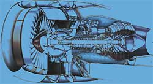
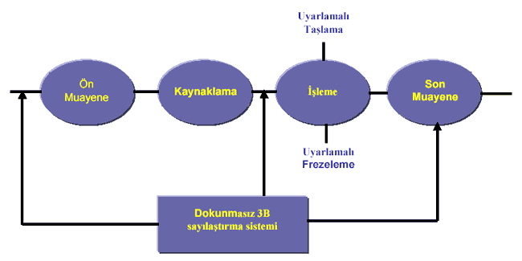
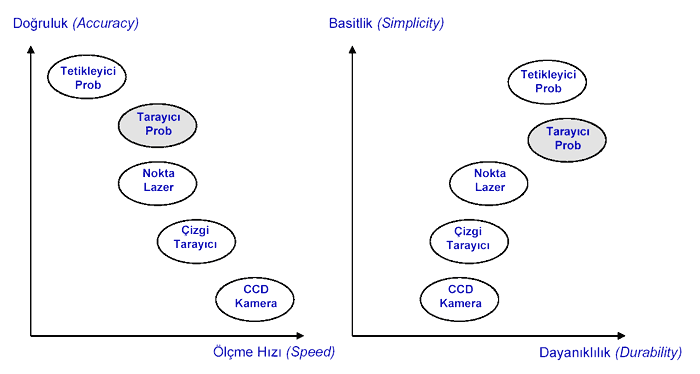

|
Oðuzhan
Yýlmaz,
Nabil Gindy, Tolga
Bozdana
School of 4M, Manufacturing Engineering
The University of Nottingham, Ýngiltere
Bu çalýþma MakinaTek
Dergisi Mart 2004
sayýsýnda da yayýnlananmýþtýr.
Giriþ
Günümüzde
güç elde etmek, havacýlýk sanayisinde kullanmak veya endüstride
elektrik elde etmek amacýyla kullanýlan türbinler; temel olarak
birçok türbin kanadýndan, pervaneden, fan kanadýndan ve diðer
parçalardan oluþmaktadýr.
Türbin
kanatlarý genelde karmaþýk bir geometriye sahiptirler ve Nikel-Titanyum
gibi iþlenmesi zor malzemelerden çok hassas þekilde imal edilirler.
Ayrýca türbin içerisinde deðiþik kademelerde farklý geometrik
yapýya sahip kanatlar kullanýlmaktadýr. Türbin kanatlarýnýn
geomertilerinin karmaþýk olmasý ve deðiþik geometrilerde olmasýnýn
yanýsýra malzeme yapýsýndan dolayý ana imalat yöntemleri olan
döküm, dövme ve frezeleme yöntemleri kullanarak yeni kanatlar
imal edilmesi hem imalat maliyetini ve hem de onarým maliyetini
arttýrmaktadýr. Kanatlar doðal olarak türbin içerisinde yüksek
ýsýya ve basýnca maruz kalmakta; ayrýca kanatlarýn içerisinde
bulunduðu dýþ hazneye sürtünmesi durumlarý oluþmaktadýr.
Tüm
bu sebepler, kanatlarýn kaçýnýlmaz olarak yýpranmasýna, yüzeylerinin
aþýnmasýna ve deðiþik geometrik bozukluklar meydana gelmesine
sebep olmaktadýr. Hem yeni bir parçanýn imalat maliyeti ve
hem de deðiþken geomerik yapý göz önüne alýndýðýnda bu kanatlarýn
bakým ve onarýmý kaçýnýlmaz hale gelmektedir. Bu nedenlerden
dolayý türbin kanatlarýnýn ve pervanelerinin restorasyonu
daha çok önem kazanmaktadýr.
Geliþen
teknolojiyle birlikte, özellikle havacýlýk ve savunma sektöründe
türbin kanatlarýnýn bakým ve onarým süreci þu üç temel aþamadan
oluþmaktadýr:
- Aþýnan
ve deformasyona uðramýþ kanatlarýn öncelikle onarýma alýnýp
alýnmayacaðýna ön bir kalite denetimi ile karar vermek;
daha sonra aþýnma tipini ve aþýnan bölgeleri tersine mühendislik
yöntemiyle tespit etmek.
- Aþýnan
bölgelerin dolgu malzemesi kullanýlarak kaynak, lazer veya
lehimleme yöntemleriyle doldurulmasý.
- Doldurulan
bölgelerin 5-eksenli takým tezgahlarýnda hassas bir þekilde
iþlenerek tekrar eski yüzey hassasiyetlerine ve geometri
normlarýna getirilmesi
Türbin
Kanadýnýn Temel Restorasyon Aþamalarý
- Türbin
kanadý üzerindeki aþýnan bölgelerin tespiti (Pre-Inspection)
- Aþýnan
bölgelerin kaynaklanarak doldurulmasý (Metal Deposition)
- Doldurulan
bölgelerin yüksek esnekliðe sahip iþlem metodlarý ile uyarlamalý
olarak iþlenmesi (Adaptive Multi-axis machining)
- Son
kontrol (Post-Inspection)

Türbin
kanatlarýn restorasyon aþamasýnda atýlacak olan ilk adým,
kanadýn tamir edilebilirliðini saptamaktýr. Aþýnan kanadýn
taranmasý ve 3B modelinin oluþturulmasýndan sonra kanat tipine
baðlý olarak belirli bölgelerin kiriþ kalýnlýklarý ve uzunluklarý
(Chordal Lenght and widht) ölçülür ve sapma büyüklüðüne göre
restorasyon iþlemine alýnýp alýnmayacaðýna karar verilir.
Aþaðýda, aþýrý çalýþma þartlarýndan dolayý bazý türbin kanatlarýnýn
uç (tip), hücum kenarý (leading edge) ve fýrar kenarý (trailing
edge) hasarlarý ile diðer tip hasarlar gösterilmektedir;
Türbin
Kanatlarýnda Genel Hasar Formlarý (Common Damaged Blade Forms)
Türbin
Kanadý Yüzeyindeki Hasarlý Bölgelerin Belirlenme Aþamalarý
- Türbin
kanadýnýn taranmasý (Scanning of Blade)
- Taranmýþ
türbin kanadý yüzeyinin modellenmesi (Surface modelling)
- Yüzey
tolerans farklýlýklarý ve geometrik deðiþiklikler referans
alýnarak aþýnan bölgelerin büyüklüðünün ve posizyonun
belirlenmesi (Determination of position and amount of deposited
areas on the blade)
Kullanýlan
Tarama Metodlarý (Scanning Methods)
- Tetikleyici
Sayýlaþtýrýcý (Trigger Touch digitizing probe)
- Tarayýcý
Sayýlaþtýrýcý (Scanner Probe)
- Nokta
Lazer tarayýcý (Laser Scanner)
- Çizgi
lazer tarayýcý (Line laser Scanner)
- CCD
Kamera (Optical scanner)
Türbin
kanatlarýnýn tersine mühendisliðinde farklý ölçme metodlarý
kullanýlmaktadýr. Bu metodlar arasýnda yer alan tetikleyici
dokunmatik prob (trigger touch probe) pahalý ve ölçme iþlemi
çok yavaþtýr. Devamlý temas eden sayýlaþtýrýcý (tactile digitising)
prob ise atölye þartlarý için en uygun olanýdýr ve kýsa tarama
zamaný ile optimal hassasiyet saðlar. Ayrýca devamlý temas
eden ve optik sayýlaþtýrýcýlar için 3, 4 ve 5 eksenli sayýlaþtýrýcý
kontrolörler mevcuttur.
Bunlara ek olarak nokta lazer sensörler
(point laser sensors) hassas malzemelerin taranmasýnda alternatif
olarak kullanýlabilecek ileri seviyede teknolojik yeniliðe
sahip bir yöntemdir. Çizgi tarayýcýlar (line scanner) ve CCD
kameralar (CCD cameras), kýsa zamanda geometriyi yakalayabilme
özelliðine sahiptirler ancak maliyetleri çok yüksektir ve
atölye þartlarý için teknolojileri çok karmaþýktýr.
Bir diðer
yöntem ise optik sistemlerin (optical systems) kullanýlmasýdýr.
Bu sistemler yüzey pürüzlüðüne karþý çok hassastýrlar ancak
tarama verileri genelde devamlý temas eden sayýlaþtýrýcý prob'daki
gibi doðruluk oranýnda elde edilemez;
Deðiþik
Tarama Metodlarýnýn Deðiþik Tarama Metodlarýnýn Karþýlaþtýrýlmasý

|